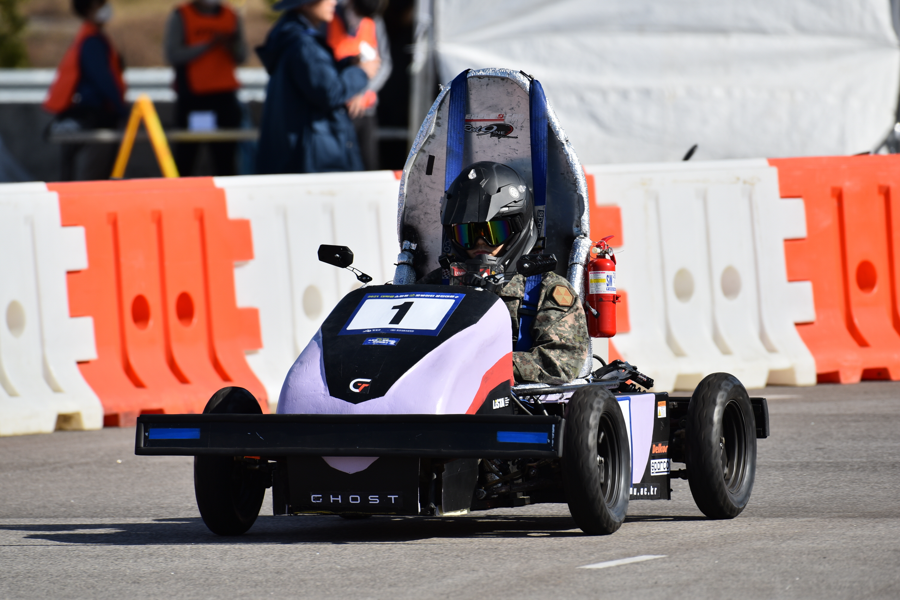
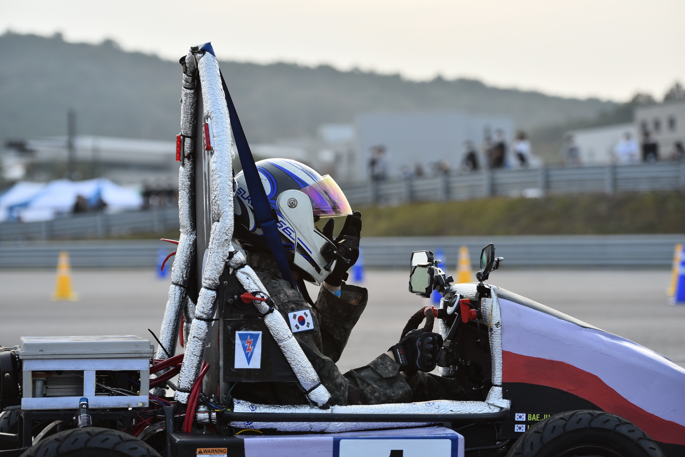

GHOST
GTE-21


스마트 E 모빌리티 경진대회에 출전하기 위하여 제작한 전기자동차.
GHOST EV 21을 뜻한다. 10KW SEITTA 119R 모터를 동력으로 하며 최고속력은 70KM.
2021 스마트 E모빌리티에 출전하여 슬라럼부문에서 공동3위를 기록하였다
내구레이스 경기 중 노후화된 모터가 과열되어 연기발생으로 리타이어,
그 후 패자부활전 진출하였으나 결승에는 진출하지 못하였다.
패자부활전 주행 영상